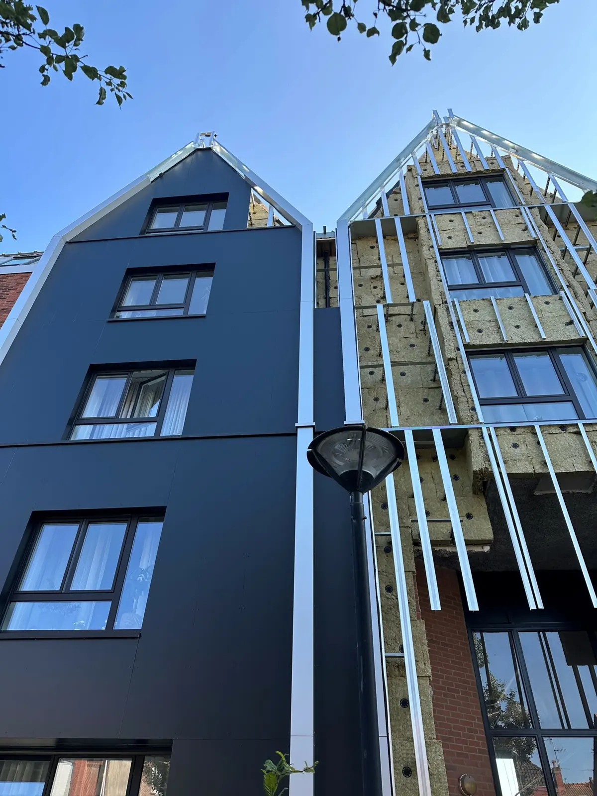

Subestructura
de revestimiento
Sistemas de subestructura conformes al cuaderno CSTB 3194 y a los ATEC / ATT de los productos de revestimiento, para cubrir todas sus necesidades.
InnoCLAD®
Sencilla, rápida y duradera: una gama completa (escuadras, perfiles, anclaje y ferretería) compatible con todos los productos de revestimiento que distribuimos.
InnoCLAD+
La subestructura de forjado a forjado para los proyectos más exigentes.
TradiCLAD
La solución de subestructura tradicional, en madera o en acero galvanizado.
TradiCLAD+
Subestructura de forjado a forjado en acero galvanizado.
A medida
¿Una configuración especial? Nuestro servicio técnico estudia y dimensiona su subestructura.
Escuadras, perfiles,
accesorios.
Las nuevas escuadras InnoCLAD® combinan una geometría optimizada y una pieza específica de rotura de puente térmico para mejorar el rendimiento de los sistemas de fachada y facilitar la instalación.
Inox simple
Concebida para satisfacer las exigencias técnicas de las fachadas de alto rendimiento.
Doble inox
Pensada para facilitar la instalación y hacer los sistemas de fachada más eficientes, seguros y duraderos.
Accesorios: fijaciones, pletina de esquina. Representación esquemática de las secciones de los perfiles.
Fijar, aislar,
rendir al máximo.
Sistemas de anclaje con nuestro socio Rawlplug. Aislantes específicos con Rockwool y Ursa para un rendimiento térmico óptimo.
Estudios y asesoramiento
- Optimización de paneles y casetes
- Notas de cálculo para subestructura
- Solicitudes de ensayos de arrancamiento para fijaciones
- Transporte con camiones adaptados, incluidos los autodescargables
- Accesorios de instalación, como los bardillons

La subestructura crece.
En junio de 2026 se anunció un nuevo edificio dedicado a la subestructura.